블렌딩이란?
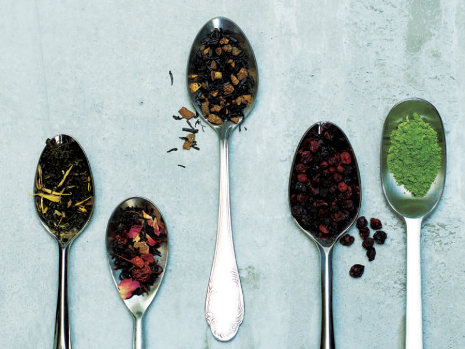
블렌딩이란 각기 다른 맛과 향을 지닌 잎차를 섞거나 기본 잎차에 꽃잎이나 과일, 허브나 향 등을 섞는 것을 말합니다.
블렌딩 티의 역사를 알려면 19세기 후반 영국의 티타임으로 시 간을 거슬러야 합니다. 익히 알려진대로 당시 영국에서는 차가 부와 권력의 상징으로 여겨질 만큼 귀했습니다. 차를 재배할 수 없는 환경이라 엄청난 비용을 지불하고 중국에서 차를 수입해야 했기 때문입니다.또한 그렇게 들여온 차의 품질을 일정한 수준으로 유지 하는 기술이 필요했는데, 그것이 바로 찻잎을 섞는 기술인 블렌딩입니다. 향이 약한 홍차에 개성 있는 향을 첨가하고 색이 옅은 경우에는 진한 색의 찻잎을 섞는 등 이상적인 맛과 향을 내기 위한 차 연구가 거듭되면서 특별한 블렌딩 티가 하나 둘 완성될 수 있었습니다.
우리에게도 친숙한 얼그레이 역시 19세기 영국 수상을 지낸 얼 그레이 백작이 자신만의 기호에 맞춘 블렌딩 티가 기원입니다. 사실 블렌딩에는 특별한 규칙이 있는 것은 아닙니다. 다만 베이스가 되는 차의 특징을 파악하는 게 우선입니다. 녹차의 경우 주로 상큼한 과일이나 꽃이 잘 어울리고, 발효차는 어떤 맛과 향에도 어울리는 매력이 있습니다. 그런 다음 스스로 어떤 차를 즐기고 싶은지 목표를 정한 뒤 어울리는 조합을 궁리해봅니다.
상큼하고 화사한 풍미를 원한다면 말린 꽃잎이나 과일 껍질을 넣고, 풍부한 맛이 끌린다면 생강이나 레몬을 더하는 식입니다. 블렌딩에 자신이 없다면 시판용 제품을 이용하는 것도 좋습니다. 이는 차 전문가가 찾아낸 가장 어울리는 조합의 블렌딩이기 때문입니다. 한 발 나아가 이 시판용 블렌딩 티를 계절에 따라 다양하게 응용할 수도 있습니다.
닫기
차를 맛있게 마시는 방법들!
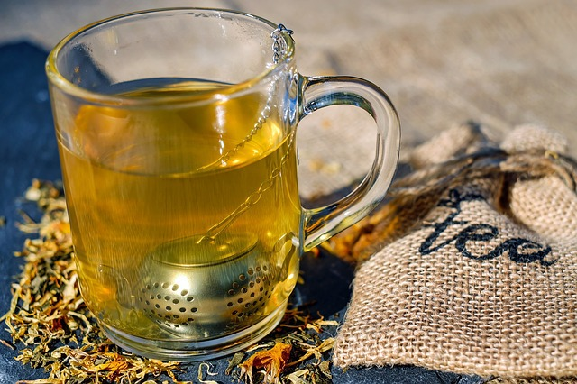
재료의 상태에 따라서 차를 우려내서 마시는 방법과 끓여서 마시는 방법으로 나눌 수 있습니다. 두가지의 방법은 맛과 향을 살리는데 서로 다르게 작용하기 때문에 재료에 따라서 알맞은 방법을 선택하여 만들어 마시면 됩니다.
우려내기(infuse)
차 주전자에 차 재료와 끓인 물을 부어서 일정 시간동안 재료의 맛과 향이 우려내고 재료를 걸러내는 방법입니다. 우려내기에 적합한 재료로는 식물의 잎, 새싹, 꽃, 말리지 않은 열매 등입니다. 홍차나 녹차, 꽃차, 잎이나 꽂을 3분의 2 이상 함유한 허브들이 우력내기에 적합합니다. 맛있는 차를 우려내기 위한 방법으로는 우선 ‘우려내는 물의 온도’, ‘재료의 적절한 양’‘차를 우려내는 시간’입니다.
① 말린 찻잎은 최상의 맛과 향을 내기 위해서는 우려내는 방법을 선택해야 합니다.
②우려내더라도 100도씨 팔팔 끓었던 물로 사용하는 것이 아니라 열에약한 꽂같은 재료는 적정한 온도까지 식힌 후 사용하는 것이 중요합니다.
③우려낼 때에는 물을 붓기 전 차 주전자를 미리 예열한다든지, 우려내는 동안 보온을 하는 등 물의 온도에 따라 차의 맛과 향이 달라지는 역할을 하기 때문에 주의를 기울여야 합니다.
④말린 찻잎을 사용할 때에는 원하는 찻물보다 더 많은 물을 사용해야 합니다. 말린 재료는 물을 흡수하기 때문에 그만큼 찻물이 줄어들게 되므로, 물의 양을 우려낼 찻물의 110%가량 조절해서 물을 사용해야 합니다.
⑤차의 농도는 재료의 양과 우려내는 시간에 비례합니다. 차의 농도를 알맞게 조절하려면 적절한 양의 재료를 적당한 시간 동안 우려내는 것이 중요합니다.
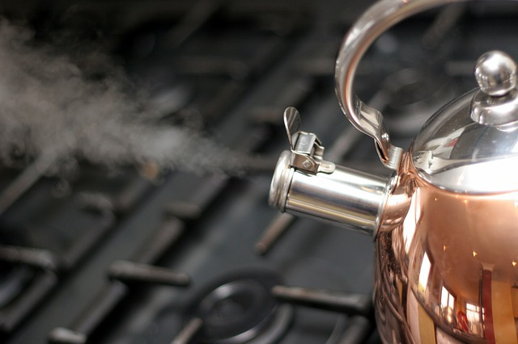
끓여내기(boiling)
냄비에 차 재료와 실온의 물을 넣고 일정 시간 동안 끓인 후 재료를 걸러내는 방법입니다.
식물의 가지나 줄기, 뿌리 또는 말린 열매와 같이 단단한 형태의 재료들은 냄비에 물과 재료를 함께 넣고 끓여야 맛과 향이 제대로 우러납니다.
끓여내기에 알맞은 재료들은 일반적으로 얇게 저며져 잇거나 작게 부순 형태로 판매됩니다. 물에 닿는 표면적이 넓을수록 끓이는 시간은 줄이면서 좀 더 진한 차를 만들 수 있기 때문입니다.
끓여내기는 재료와 물을 처음부터 함께 끓이는 방법과 물부터 먼저 끓이다가 재료를 넣는 방법 두가지가 있습니다. 재료에 따라서 끓이는 온도가 결정되지만 보통은 끓이는 동안 물 온도가 90℃ 이상으로 유지되기 때문에 몇가지 특징이 있는 재료 외에는 처음부터 재료를 넣고 100℃까지 끓여내도 상관없습니다.
끓여내기 물이 끓을 때까지는 강불에서 끓이고 이후에는 약불에서 적정시간동안 끓이면 됩니다. 끓이는 시간은 재료와 가열 기구에 따라 달라지는데 차가 충분히 진하게 우러나오면 거름망을 사용해서 재료는 걸러내고 그릇이나 찻주전자에 찻물만 내리면 됩니다.
닫기
건강 고민별로 골라 마시는 차 7종류
개개인이 갖고 있는 건강 고민 별로 골라 마실 수 있는 대표적인 차 7종류를 소개한다.
1. 빈혈
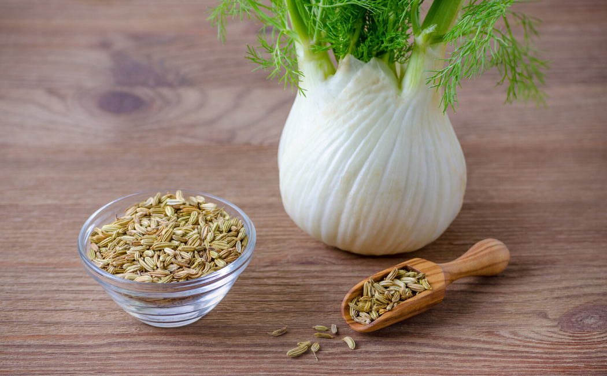
펜넬차
빈혈 환자의 90% 이상이 철결핍성 빈혈이기 때문에 빈혈이 있다면 철분을 많이 섭취해 주어야 한다
펜넬 식물에는 많은 양의 철분이 함유되어 있기 때문에 철분 흡수를 막는 카페인이 많이 들어있는 커피나 녹차보다 훨씬 더 빈혈 완화에 좋다.
펜넬 잎을 깨끗이 씻어 따뜻한 물에 우려내어 차를 즐긴 후 남은 뿌리 부분은 요리에 넣어 잘 활용할 수 있다.
2. 변비
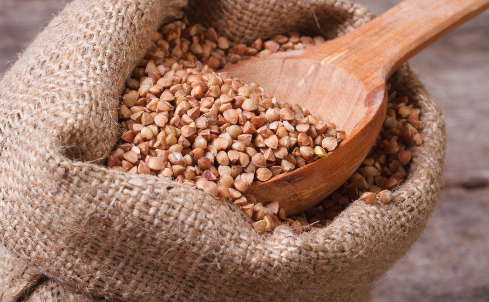
메밀차
사람마다 배변 활동의 시간이 다르기 때문에 꼭 하루에 한 번 화장실에 가지 못한다고 무조건 변비라고 말할 수는 없다.
하지만 아랫배가 딱딱하고 불편한 느낌이 자주 들고 화장실에 가도 시원하게 배변 활동을 하지 못한다면 변비를 의심해보아야 한다.
시중에 파는 변비 완화제의 경우 장에 자극이 많이 가기 때문에 자연적으로 배변 활동을 촉진시킬 수 있는 메밀차를 추천한다.
메밀에는 식이섬유가 풍부하게 들어가 있어 장의 연동운동을 도와주고 큰 자극 없이 변비를 치유하는 데 도움이 된다.
3. 여드름
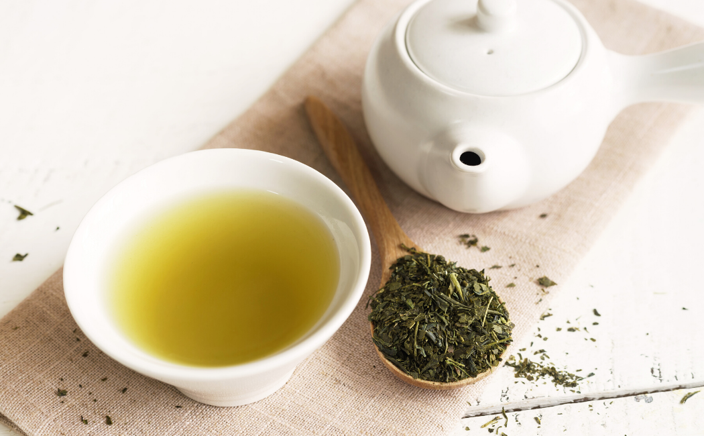
메밀차
사람마다 배변 활동의 시간이 다르기 때문에 꼭 하루에 한 번 화장실에 가지 못한다고 무조건 변비라고 말할 수는 없다.
하지만 아랫배가 딱딱하고 불편한 느낌이 자주 들고 화장실에 가도 시원하게 배변 활동을 하지 못한다면 변비를 의심해보아야 한다.
시중에 파는 변비 완화제의 경우 장에 자극이 많이 가기 때문에 자연적으로 배변 활동을 촉진시킬 수 있는 메밀차를 추천한다.
메밀에는 식이섬유가 풍부하게 들어가 있어 장의 연동운동을 도와주고 큰 자극 없이 변비를 치유하는 데 도움이 된다.
4. 지방 분해
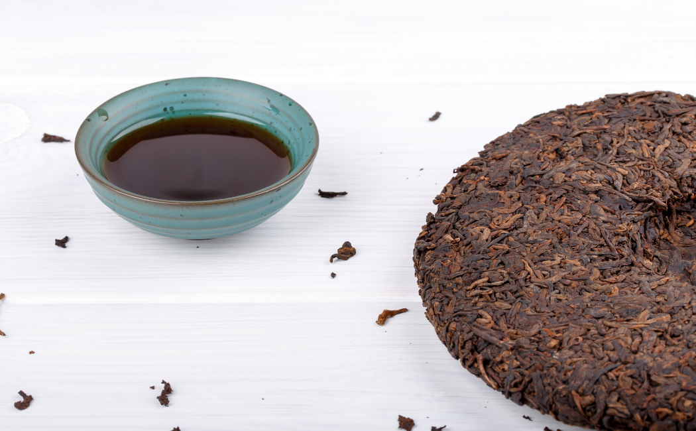
보이차
보이차는 발효 흑차의 일종으로 중국인들이 기름진 음식을 먹기 전과 후에 마시는 차로 알려져 있다.
한국에서는 가수 이효리가 ‘효리네 민박’에서 아침에 일어나 보이차를 즐겨 마신다고 밝혀 인기를 끌은 바가 있다.
보이차는 콜레스테롤 수치를 감소시켜주고 지방을 분해시켜주는 역할을 하기 때문에 다이어트에 관심이 있다면 마셔보는 것을 추천한다.
5. 부종
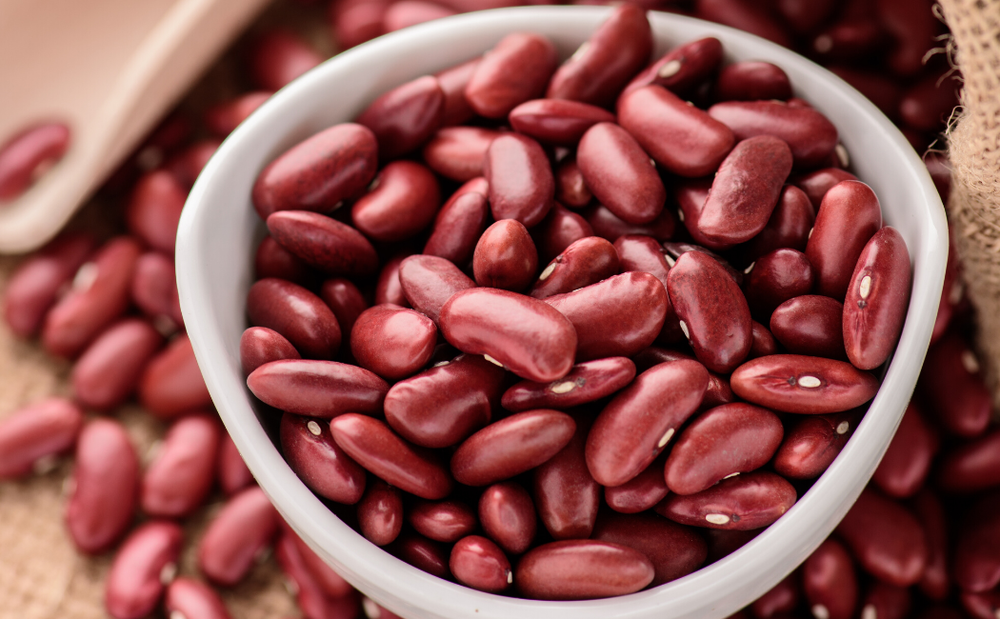
팥차
매일 아침 얼굴과 다리가 많이 붓는 부종에 고생하고 있다면 팥차를 마셔보자.
팥 안에는 사포닌과 칼륨 성분이 풍부하게 들어있어 부종의 가장 큰 원인인 나트륨을 몸 밖으로 쉽게 배출 시켜준다. 몸매 관리를 열심히 하는 걸그룹 멤버들이 팥차와 팥물을 즐겨 먹는다고 알려져 주목을 받기도 했다.
단, 팥은 이뇨작용도 하기 때문에 팥차를 마실 때 화장실에 자주 가야 하는 것을 생각하며 마시자.
6. 감기
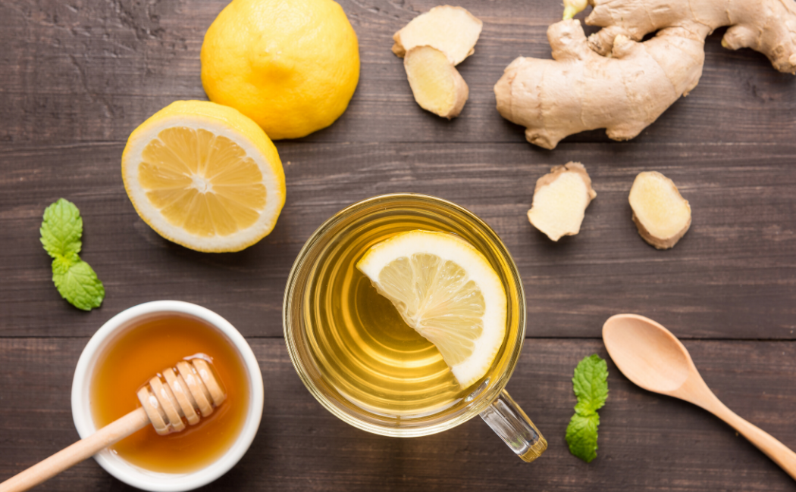
레몬 생강차
생강은 바이러스와 싸우는 항산화 물질로 가득 차 있어 면역력을 키우고 감기 바이러스를 예방하는데 좋은 음식이다. 목에 좋은 꿀과 비타민C가 풍부한 레몬과 함께 레몬 생강청을 만들어 따뜻한 물에 타 먹으면 맛도 좋고 면역력도 높일 수 있다.
또, 레몬 생강청은 대량으로 만들어 선물하기에도 좋기 때문에 코로나 바이러스가 유행인 지금 만들어 지인들에게 선물해보는 것도 추천한다.
7. 스트레스 / 두통
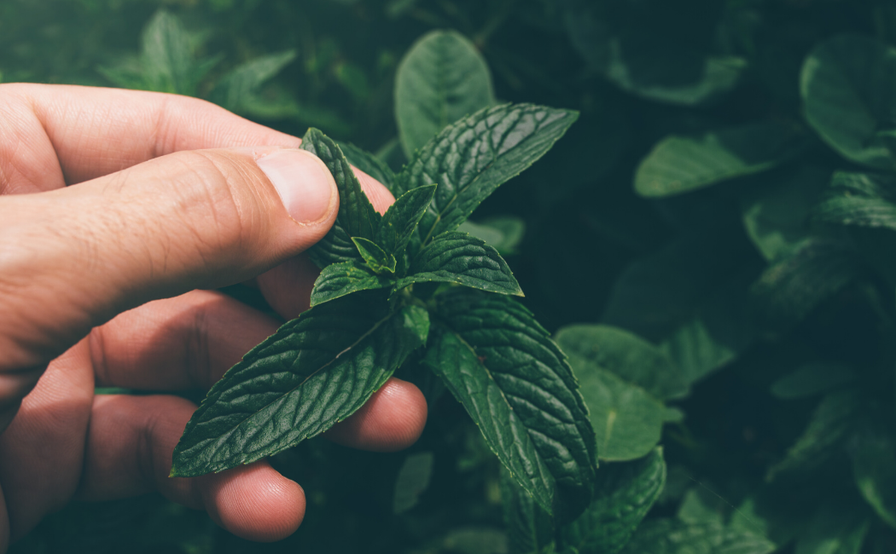
페퍼민트 차
평소에 스트레스를 자주 받고 두통으로 아파하는 일이 많다면 페퍼민트 차를 마셔보는 것은 어떨까?
페퍼민트는 향을 맡는 것만으로도 심신 안정이 되고 불안감이 감소되기 때문에 실제로 우울증과 불안장애로 입원한 환자들의 치료에도 쓰인다고 한다
또, 페퍼민트는 근육 이완 효과도 있어 두통을 완화하는 데 효과적이므로 정신과 육체적으로 둘다 효능을 볼 수 있다.
닫기
계절별 마시기 좋은차
개개인이 갖고 있는 건강 고민 별로 골라 마실 수 있는 대표적인 차 7종류를 소개한다.
1. 봄
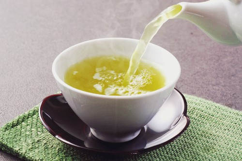
녹차
노폐물배출에 꽤 뛰어난 효과를 갖고 있어 봄은 꽃가루 등의 각종 알레르기와 미세먼지가 심해지는 계절에 잘 맞는 것이다.
녹차를 한 잔 마시게 되면 중금속성분과 같은 유해성분을 소변을 통해 배출시키는데 많은 도움을 받을 수가 있다.
2. 여름
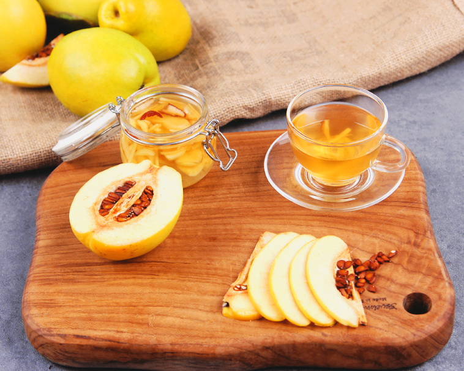
모과차
모과차 속의 감기예방 효능과 함께 사포닌과 구연산 그리고 다양한 비타민 성분들이 기관지를 보호해주는데 도움을 준다.
피로회복에도 도움을 줘 여름철 흔히 일어나는 질병으로 부터 건강을 지키기에 탁월하다고 합니다.
3. 가을
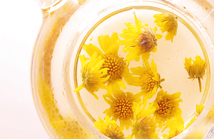
국화차
국화는 가을의 대표적인 꽃이다.. 비타민C가 풍부하기 때문에 환절기에 면역력을 개선해주고 혈액순환을 도와줄 수 있습니다.
게다가 간과 피로회복에도 좋은 효능을 갖고 있어 자주 피곤함을 느끼신다면 마시는 차 추천은 국화가 적당하다.
4. 겨울
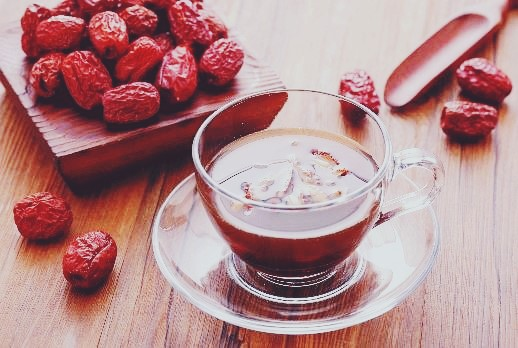
대추차
대추 속에는 비타민C가 풍부하며 속을 따뜻하게 만들어주기 때문에 겨울철에 마시기에도 좋지만 여성분들에게도 굉장히 좋다고 합니다.
또 대추 특유의 단맛을 주는 '갈락토오스'는 신경안정에 도움을 주기 때문에 불면증이 있으신 분들 또는 숙면을 취하기 어려운 분들께 마시는 차 추천한다.
닫기